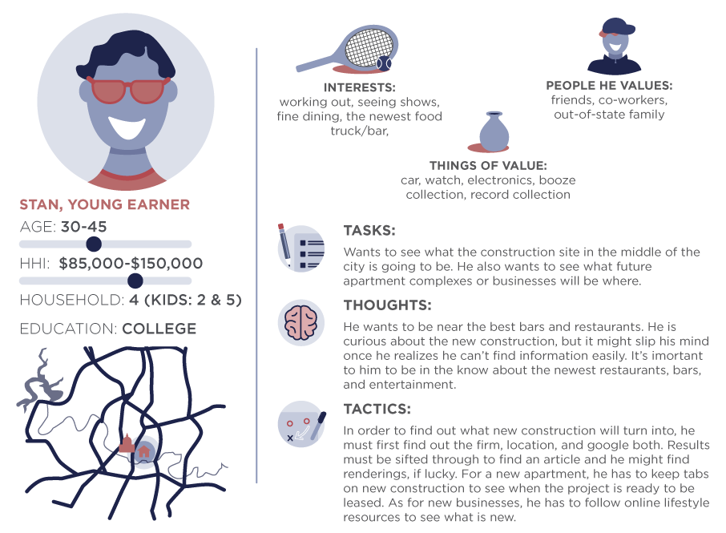
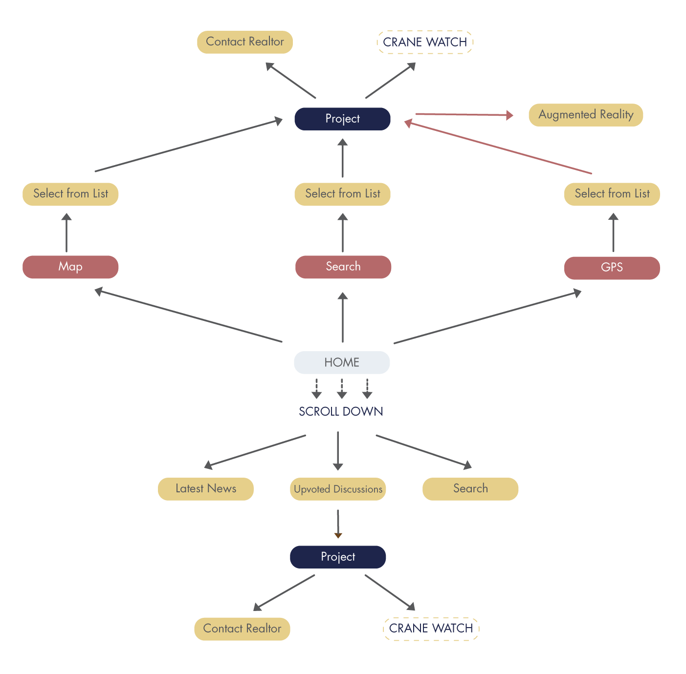
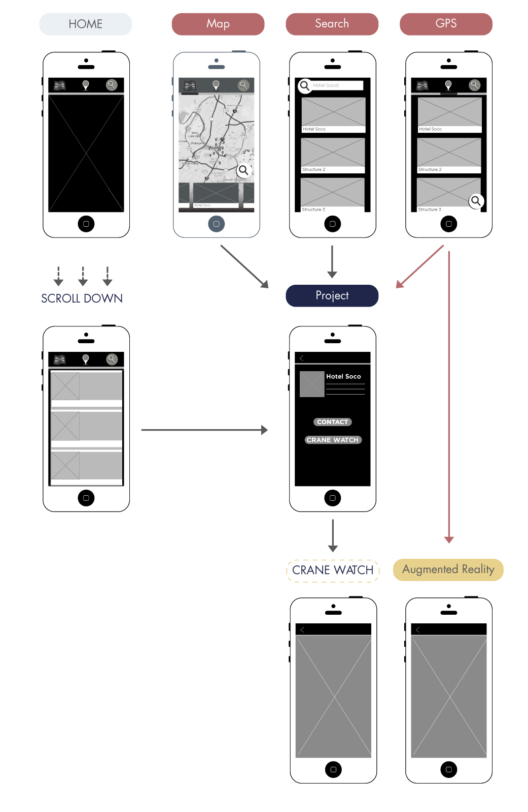
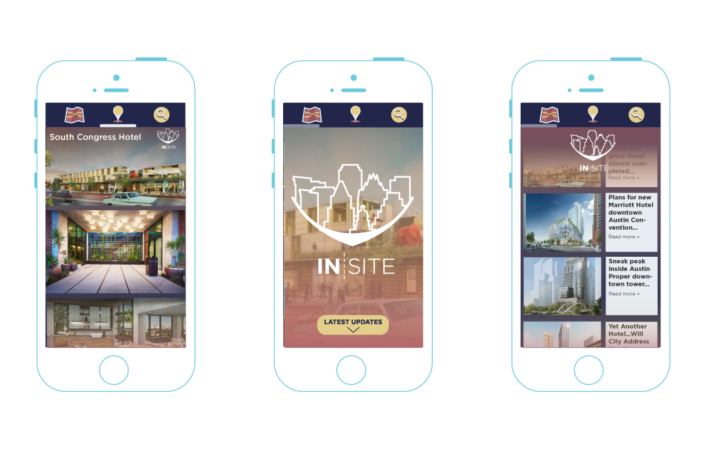

INSITE
Brief
This spec project is a site/app that lets you see what new buildings are going up in your neighborhood and what they will look like.
Scope
Branding, UX, & UI

INSIGHT INTO YOUR CITY
INSITE looks at new construction that is happening around the user. 3D renderings that architects produce for clients can be used to create a digital map of what’s to come. If near the site, the user can use their phone to see an augmented reality view of what the site will look like once the construction is finished. The user can also use other functions of INSITE to see other projects happening in their city and what other people are saying about those projects.
Objective: INSITE needed to give people access to info about what was happening in their city, a place to discuss it, and as many visual images as possible to let them see what it would look like.
Solution: Adding a Pokemon Go-esque augmented reality feature gave INSITE a cool factor.
PERSONA
PROCESS
The home page is featured in the center because from there you can scroll down to see a news feed of latest buzz about new construction. It seeks to inform citizens as well as give them an outlet to discuss what is changing their city. Users have the option to search sites by map, gps location, or by typing in their search directly. Each of these options takes them to a list of projects either near them or close to their search. Once they are on the project page, users can contact a realtor for more information or (if the option is available) they can tune in to a live crane watch feed.
WIREFRAMES
BRANDING
The logo invokes Google’s map pin iconography, but also features iconic buildings of Austin. As INSITE grows with popularity, each city gains a custom logo with their own skyline. Because INSITE is about construction, I shied away from using any shades of green. Instead, I used shades of dusty rose and yellow, grounded with a deep indigo.
FINAL
To the left is a mockup of a project page. The two to the right are the mockups of the home page and the newsfeed that appears when a user scrolls further down.
